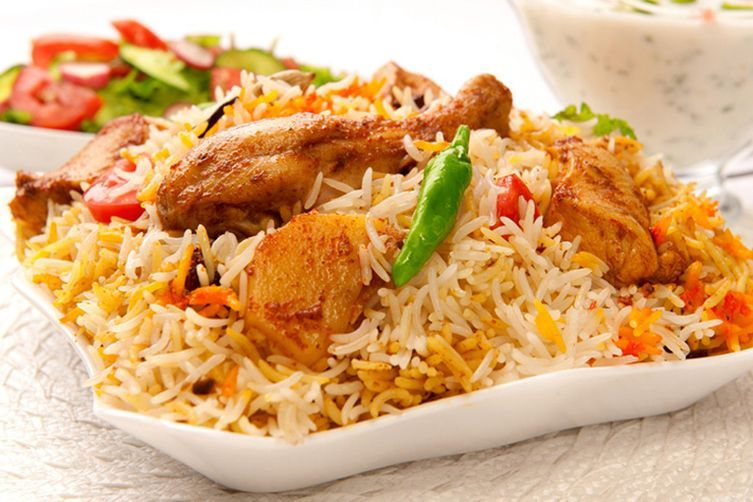

A dosa is a thin pancake or crepe originating from South India, made from a fermented batter
predominantly consisting of lentils and rice. ... Its main ingredients are rice and black gram, ground
together in a fine, smooth batter with a dash of salt, then fermented.
Idli
Idli or idly are a type of savoury rice cake, originating from the
Indian subcontinent, popular as breakfast foods in Southern India and in Sri Lanka. The cakes are made
by steaming a batter consisting of fermented black lentils and rice.
Sadhya
The Sadya is the traditional vegetarian feast of Kerala. Usually served as lunch, it consists of par
boiled pink rice, side dishes, savouries, pickles and desserts spread out on a plantain leaf. Tradition
insists that the tapering end of the plantain leaf should point to the left of the seated guest.

Biriyani
Simply put, biryani is a spiced mix of meat and rice, traditionally cooked over an open fire in a leather
pot. It is combined in different ways with a variety of components to create a number of highly tasty
and unique flavor combinations.
Shawarma
Image result for shawarma description
What Is Shawarma? Shawarma is thinly sliced cuts of meat, like chicken, beef, goat, lamb, and sometimes
turkey rolled into a large piece of flatbread or pita that has been steamed or heated. Inside the pita,
foods like hummus, tahini, pickles, vegetables, and even french fries are added.
Burger
A hamburger (or burger for short) is a food, typically considered a sandwich, consisting of one or more
cooked patties—usually ground meat, typically beef—placed inside a sliced bread roll or bun. The patty
may be pan fried, grilled, smoked or flame broiled. ... A hamburger topped with cheese is called a
cheeseburger.
Porotta
Parotta or Porotta is a Subcontinental layered flatbread made from Maida or Atta, alternatively known as
flaky ribbon pancake. ... It is prepared by kneading maida/wheat flour, egg (in some recipes), oil or
ghee and water.
Schezwan
This easy recipe for spicy and tangy Schezwan noodles is completely vegan, and delicious to prepare as a
tasty lunch or dinner. It features stir fried vegetables and noodles tossed with a homemade Schezwan
sauce that’s got a kick of heat and just the right hint of sweetness
Cake
A cake is a sweet food made by baking a mixture of flour, eggs, sugar, and fat in an oven. Cakes may be
large and cut into slices or small and intended for one person only. ... Food that is formed into flat
round shapes before it is cooked can be referred to as cakes.